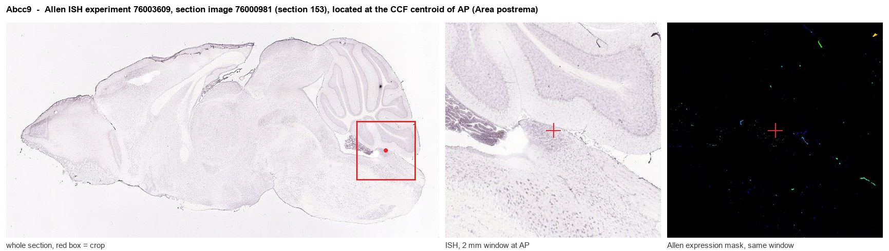
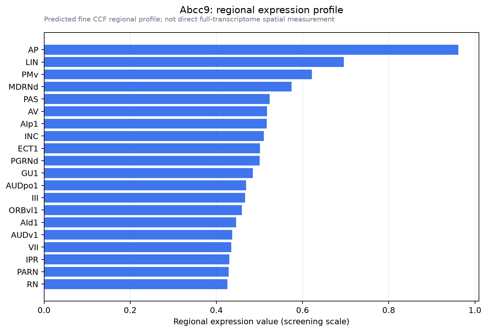

Abcc9
ATP-binding cassette sub-family C member 9 (Sulfonylurea receptor 2)
Spatial tier: RESTRICTED · Class: ION_CHANNEL · Top region: AP (Area postrema) · Positive regions: 15/554
45.9Discovery Score
36.9Targetability Score
CEvidence grade C
What this means: Abcc9: fine CCF profile is restricted toward AP (top regions: AP, LIN, PMv, MDRNd, PAS; 15 positive regions); direct spatial validation is still required.
Function in AP: evidence, prediction, innovation
- Gene function
- ABCC9 encodes SUR2, an ATP-binding-cassette protein with no transport function of its own that serves as the regulatory subunit of ATP-sensitive potassium (KATP) channels, co-assembling with Kir6.1 or Kir6.2 pore subunits. SUR2 reads the intracellular ATP/ADP ratio and thereby couples metabolic state to potassium conductance and excitability. It binds sulfonylureas such as glibenclamide and openers such as pinacidil; gain-of-function mutations cause Cantu syndrome and loss-of-function causes ABCC9-related intellectual disability myopathy syndrome.
- Region function
- The area postrema is a circumventricular organ on the floor of the fourth ventricle with fenestrated capillaries and no blood-brain barrier; it samples circulating toxins, hormones and peptides and drives nausea, conditioned taste avoidance and suppression of feeding through the NTS and parabrachial nucleus.
- Published in this region
- inferred No region-specific literature found. Thomzig et al. 2005 mapped Kir6.1 and Kir6.2 across rat brain and found Kir6.1 concentrated in glia and vasculature rather than neurons, and Nelson et al. 2015 report that brain SUR2 transcripts are largely pericytic, smooth-muscle and endothelial, which fits the exceptionally dense fenestrated vasculature of the area postrema.
- Predicted function
- Prediction: in the area postrema, SUR2-containing KATP channels most likely sit on mural and endothelial cells of the fenestrated plexus and on a subset of glucose-sensitive neurons, translating falling ATP during hypoglycaemia or toxin exposure into hyperpolarisation and altered local perfusion and permeability. Deleting Abcc9 in AP, or opening the channel with pinacidil, should blunt AP recruitment by circulating emetic agents and reduce lithium chloride- or GLP-1-agonist-induced conditioned taste avoidance; a Cantu gain-of-function knock-in should exaggerate that loss.
- Innovation
- ★★★★☆ 4/5 KATP metabolic sensing is an obvious fit for a barrier-free chemosensory organ, yet no study has tested SUR2 in the area postrema although floxed and gain-of-function alleles exist.
- Tools
- Abcc9 floxed and SUR2-null mice; Cantu gain-of-function knock-ins (R1154Q, V65M); pinacidil and diazoxide openers, glibenclamide blocker, SUR2-selective inhibitors described by Li et al. 2024; anti-Kir6.1/SUR2 antibodies. AP cell types are accessible with Gfral-Cre, Calcr-Cre and Glp1r-Cre plus fourth-ventricle AAV.
- References
Direct evidence located at the region

Allen ISH experiment 76003609, section image 76000981 (section 153): the section that contains the CCF centroid of Area postrema according to the Allen image-to-atlas alignment (reference_to_image), with a 2 mm window around that point. Left: whole section, red box = window. Middle: ISH signal. Right: Allen's expression-mask view of the same window. open this image in the Allen viewer
Look it up yourself: Allen Mouse Brain ISH for Abcc9Allen reference atlas: AP (structure 207)ABC Atlas MERFISH viewer(in the ABC Atlas choose dataset MERFISH-C57BL6J-638850-CCF, colour cells by gene "Abcc9" or by parcellation_substructure "AP")All genes confined to AP + 3-D brain
Direct spatial evidence
MERFISH REGION LOCATOR

Regional expression figure

Predicted WMB × fine-CCF profile; not direct full-transcriptome spatial measurement.
Spatial profile
Evidence and specificity
- Evidence status
- PREDICTED_FINE
- Direct sources
- None; predicted localization only
- Exclusive threshold
- 12 positive regions out of 554
- Spatial specificity
- 0.291
- Top-region fraction
- 0.069
- Filter status
- PASS
Interpretation limits
- Cell-type-to-region projection is imputed expression, not direct spatial measurement.
- Adult reference atlases do not establish stability across age, sex, strain, state, or disease.
- Transcript abundance does not guarantee protein abundance or genetic-tool performance.